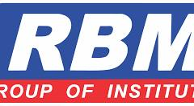

RBMI / Library operations
Integrated Library Management System
Complete operator and deployment manual. Five institutions, one consistent set of workflows.
Open printable manual
- Welcome & system scope
- Local installation & demonstration
- Live deployment on the free stack
- Accounts, roles & institution access
- Catalogue, accessions & barcode labels
- Patron registration & membership
- Issue, return, renew & receipts
- Reservations & hold queue
- Fine rules, payment & waiver
- Bulk books & student CSV upload
- Vendors, orders, invoices & receiving
- Stock verification & discrepancy review
- Reports, exports & audit trail
- Policy settings, holidays & operational controls
- Backups, restore & go-live acceptance
- Troubleshooting & CHM compilation